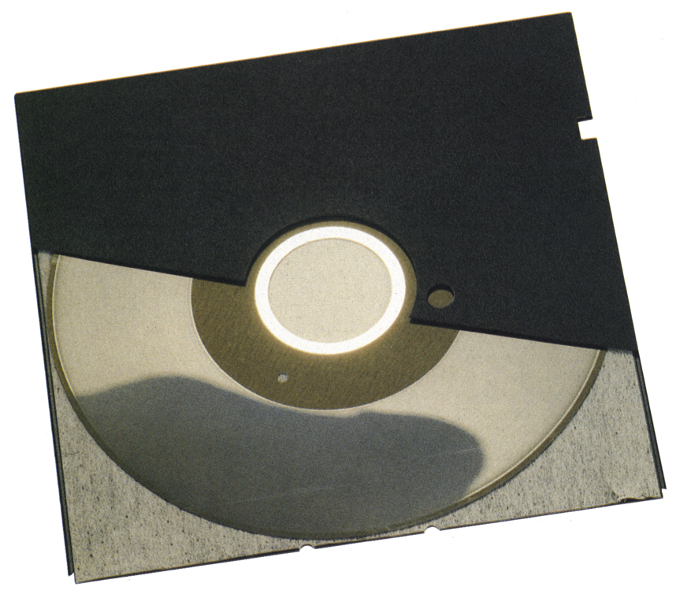
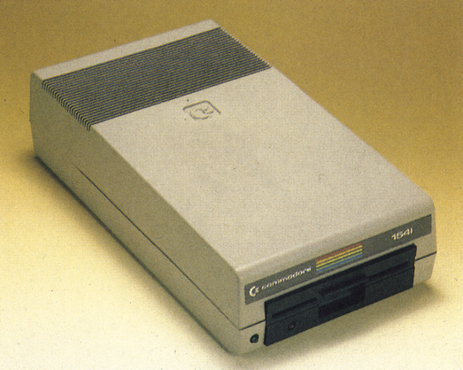
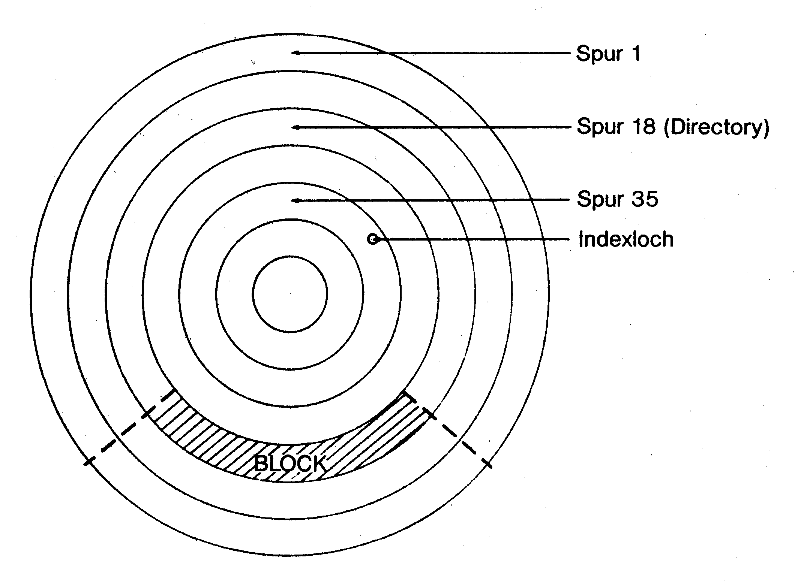
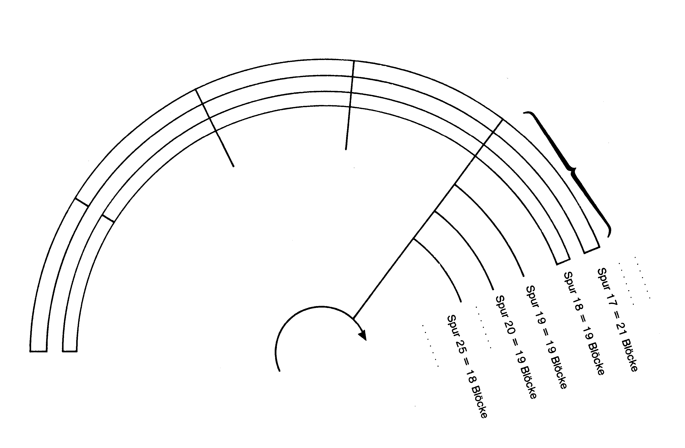
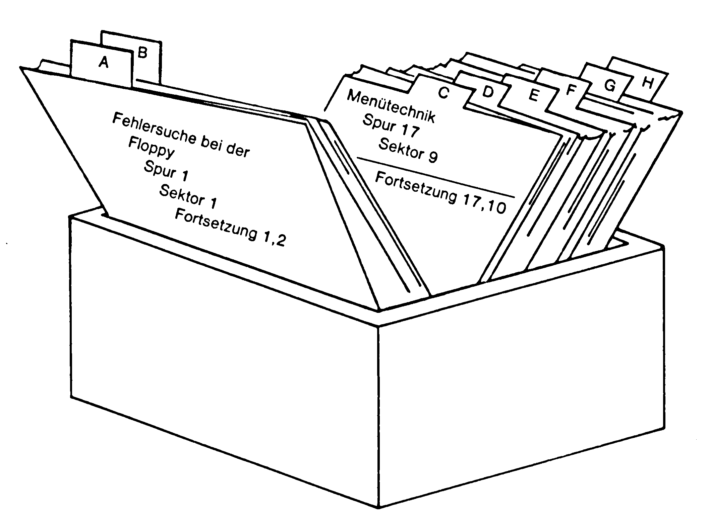

Der Massenspeicher mit Intelligenz
Das Speichermedium, das Ihnen die Arbeit mit Daten und Programmen erleichtert, ist die Diskette. Auf einer runden, flexiblen Magnetscheibe können fast 170000 Byte gespeichert und verwaltet werden. Das Wie zeigt Ihnen dieser Artikel.
Das Herz einer Diskette ist die Magnetscheibe. Auf einem runden Trägermaterial ist eine magnetische Schicht aus feinen Eisenteilchen aufgetragen (Bild 1). Diese magnetisierbare Schicht kann Magnetzustände speichern, das heißt, die einzelnen Bytes werden in der Magnetschicht eingefroren. Aber ohne Organisation gäbe es ein wildes Chaos, wenn die Daten beliebig auf der Diskette gespeichert würden. Deshalb muß vor dem Gebrauch erst eine Organisation aufgebaut werden. Dieses Organisieren nennt man Formatieren. Mit Hilfe eines Programms wird die Diskette (beim Laufwerk 1541, Bild 2) in 35 Kreisringe (1 bis 35), die Spuren, unterteilt (Bild 3). Auf diese Spuren werden die Informationen in kleineren Bereichen, den Sektoren, untergebracht (Bild 4). Man muß sich das wie einen Karteikasten vorstellen. Eine Kartei ist in einzelne Buchstaben unterteilt, von A bis Z. Unter jedem Buchstaben sind wieder mehrere Karteikarten mit Notizen abgelegt. Das Register A bis Z können wir mit den Spuren vergleichen, die zusätzlichen Karteikarten mit den Sektoren auf jeder Spur (Bild 5).





Zur Verdeutlichung des Prinzips schauen wir uns den Ablauf beim Laden eines Programms an. Der erste Schritt ist die Eingabe des Befehls
LOAD "test",8.Der Befehl LOAD veranlaßt den Computer, ein Programm mit dem Namen »test« zu laden. Die Acht hinter dem Komma steht für das Laden von der Floppystation.
Der Computer öffnet den Verbindungskanal zur Floppystation und teilt der Floppy mit, daß die Daten für das Programm »test« benötigt werden. Die Floppystation verfügt über einen eigenständigen Computer, dem DOS = Disk Operating System, der für die Verwaltung aller Daten auf der Diskette verantwortlich ist. Das DOS schaut in einem Register, dem Directory nach, ob Daten unter dem Namen »test« vorliegen. Dieses Directory (Inhaltsverzeichnis), in dem alle Programmnamen gespeichert sind, befindet sich auf jeder Diskette in der Spur 18. Findet das DOS einen Eintrag unter dem Namen »test«, so liest es Daten, die neben dem Namen im Directory gespeichert sind. Diese Daten geben Auskunft darüber, an welcher Stelle (Spur und Sektor) auf der Diskette das Programm beginnt und wieviele Sektoren von dem Programm belegt werden. Das Steuerungssystem fährt den Lesekopf an den Anfang der Information, liest die Daten blockweise aus und übergibt sie dem Computer. Dabei kann jeder Sektor nur eine begrenzte Anzahl an Zeichen speichern (254 Byte). In der Regel sind Programme aber länger als 254 Byte, deshalb müssen die Daten in mehreren Sektoren untergebracht werden. Damit das DOS weiß, in welchem Sektor die Fortsetzung steht, werden jedem Sektor zwei Zeiger vorangestellt, in dem die Adresse des nächsten Sektors gespeichert ist. Sind aus einem Sektor alle Daten ausgelesen, so springt der Lesekopf auf den Sektor mit der Fortsetzung und liest weiter. Das Ende wird dem DOS dadurch angezeigt, daß eine Spur angesprochen wird, die nicht auf der Diskette existiert, die Spur 0. Nachdem die Floppystation alle Daten an den Computer übergeben hat, geht sie wieder in Wartestellung, bis ein neuer Befehl anliegt.
Als Nächstes wollen wir uns den umgekehrten Weg ansehen, das Speichern eines Programms. Zuerst wird wieder ein Befehl eingegeben, der den Computer veranlaßt, Daten an die Floppystation zu übergeben.
SAVE"test",8Nachdem die Floppystation den Befehl erhalten hat, schaut sie nach, wo auf der Diskette noch Platz vorhanden ist. Hat sie ausreichend Platz gefunden, fährt sie den Schreibkopf auf die richtige Position und beginnt die Daten zu speichern. Reicht ein Sektor für die Daten nicht aus, so verkettet sie den Sektor mit anderen freien Sektoren, bis das Programm auf der Diskette untergebracht ist.
Es war bisher des öfteren vom Directory die Sprache. Was ist das Directory? Wir können es mit einem Karteikasten zur Verwaltung von Akten vergleichen (Bild 5). Auf der Karteikarte steht zum Beispiel, daß das Programm »Menütechnik« im X'ten Aktenschrank und unter dem Y-Aktenzeichen zu finden ist. Die Sekretärin braucht dann nur den richtigen Aktenschrank (Spur) öffnen und die Akte mit dem gesuchten Aktenzeichen (Sektor) entnehmen. Genauso verfährt das Directory in unserer Diskettenstation. Neben dem Programmnamen finden wir Einträge über die Spur und den Sektor, bei dem das Programm beginnt. Außerdem befindet sich noch ein Eintrag im Directory, der über die Länge des Programms, das gespeichert ist, Auskunft gibt. Das Directory liegt, wie schon erwähnt, auf der Spur 18, in den Sektoren Eins bis 17. Pro Sektor können wir 8 Programme verwalten. 18 Sektoren mit je acht Programmen ergeben maximal 144 Programme pro Diskette, die abgelegt werden können. Vorausgesetzt ist, daß die einzelnen Programme nicht zu lang sind. Für die 144 Programme stehen Ihnen insgesamt 664 Sektoren zur Verfügung. Woher weiß die Floppystation, wieviel Platz noch übrig ist? Dazu befindet sich im Sektor Null der Spur 18 eine Einrichtung, die die Belegung von Spuren und Sektoren beinhaltet, die BAM. BAM steht für Block Availability Map = Sektor-Belegungs-Plan. In dieser BAM ist für jeden Sektor auf der Diskette ein Bit reserviert, das Auskunft darüber gibt, ob dieser Sektor mit Daten belegt ist oder nicht. Ist ein Sektor belegt, so steht hier eine Null. Für jeden freien Block steht eine Eins.
Die eingebaute Müllabfuhr
Was macht die Floppystation mit Programmen und Daten die nicht mehr benötigt werden und noch Teile der Diskette belegen? Dazu gibt es in der Floppystation eine Art Müllabfuhr, den SCRATCH-Befehl. Geben wir den Befehl
OPEN 15,8,15,"S:NAME":CLOSE 15 OPEN 15,8,15,"S:F*":CLOSE 15 OPEN 15,8,15,"S:*":CLOSE 15
Syntax:
| OPEN | => | Mit OPEN eröffnen wir einen Verbindungskanal zu einem Gerät (Datasette, Floppystation, Drucker) zur Übertragung von Daten. Auch als Öffnen eines File bezeichnet. |
| 15 | => | Mit der ersten Ziffer teilen wir dem Gerät eine logische Nummer (Filenummer) zwischen 0 und 127 zu. |
| 8 | => | Mit der zweiten Ziffer legen wir das Gerät fest (0 Tastatur, 1 Datasette, 3 Bildschirm, 4 bis 7 Drucker). In unserem Fall steht die 8 für die Floppystation. |
| 15 | => | Mit der dritten Ziffer legen wir den Übertragungskanal fest. Dabei sind: 0 für das Lesen eines Programms von der Floppy, 1 für das Speichern eines Programms auf der Floppy, 2 bis 14 ist für diverse Zwecke, 15 ist zur Befehlsübertragung an die Floppy reserviert. |
| S: | => | Das S steht für SCRATCH = löschen. |
Mit dem ersten Befehl löscht man das Programm mit der Bezeichnung »Namen« aus dem Directory. Damit ist das Programm auf der Diskette nicht mehr präsent (daß dieses nicht ganz stimmt, sehen wir später). Mit dem zweiten Befehl löscht man alle Programme, die mit F beginnen. Dabei steht das Sternchen für einen Joker. (Alle Zeichen, die ab dem Joker im Programmnamen stehen, werden vernachlässigt.) Mit dem dritten Befehl löscht man alle Programme, die auf der Diskette sind. Aber ist damit das Platzproblem gelöst? Ja und nein. Das Programm ist zwar aus dem Directory verbannt, aber in der BAM sind die Sektoren noch als belegt gekennzeichnet. Dieses läßt sich mit dem folgenden Befehl schnell nachholen: OPEN 15,8,15,"V:".
Syntax:
| OPEN | => | Öffnen eines Files |
| 15 | => | logische Filenummer |
| 8 | => | Geräteadresse |
| 15 | => | Befehlskanal |
| V: | => | Validate = Aufräumen |
Mit Validate wird ein Programm aufgerufen, das überprüft, welche Sektoren noch mit einem Programm belegt sind. Alle als frei erkannten Sektoren werden mit einer Eins in der BAM gekennzeichnet. Es gibt noch eine weitere Möglichkeit, die Diskette aufzuräumen. Aber Vorsicht, dieser Befehl kann nicht mehr rückgängig gemacht werden. Dagegen ist es bei den bisher genannten Aufräummethoden mit einem speziellen Programm noch möglich gewesen.
Die radikale Methode ist das Formatieren. Dabei gibt es zwei Formatierungsbefehle, das kurze und das lange Formatieren.
OPEN 15,8,15,"N:Diskettenname":CLOSE 15 OPEN 15,8,15,"N:Diskettenname,ID":CLOSE 15
Syntax:
| OPEN | => | Öffnen eines Files |
| 15 | => | logische Filenummer |
| 8 | => | Geräteadresse |
| 15 | => | Befehlskanal |
| N: | => | Befehl für NEW = Neu |
| ,ID | => | Identifikationsmarke, bestehend aus zwei Buchstaben, aus der die Floppystation erkennt, ob die Diskette zwischenzeitlich gewechselt wurde. |
Den langen Formatierungsbefehl kennen Sie bereits, wenn Sie schon über eine Floppystation verfügen, jedesmal wenn Sie eine neue, kauffrische Diskette zum ersten Gebrauch vorbereiten. Hierbei werden die Spuren und Sektoren neu angelegt und alle Datenblöcke überschrieben. Nach dieser Befehlsausführung sind keine alten Daten mehr auf der Diskette zu finden. Läßt man bei dem Formatierungsbefehl die ID-Kennung weg, so hat man einen kurzen Formatierungsbefehl. Bei diesem Befehl wird nur das Directory und die BAM neu angelegt. Den Unterschied erkennt man schon bei der Länge der Befehlsausführung. Das lange Formatieren benötigt so um eine Minute, bis alle Sektoren und Spuren neu angelegt sind. Der kurze Formatierungsbefehl ist schon nach einigen Sekunden abgearbeitet.
Gelöscht und doch nicht gelöscht
Beim kurzen Formatieren und beim Scratch-Befehl sind die alten Daten noch in den Sektoren erhalten geblieben. Nur im Directory und in der BAM sind diese Sektoren als frei gekennzeichnet worden. Also besteht die Möglichkeit, diese Daten zu restaurieren. Dafür gibt es spezielle Programme, wie den Diskmonitor. Aber keine Angst, wir gehen nicht weiter darauf ein. Es ist nur wichtig zu wissen, daß versehentlich gelöschte Daten auf der Diskette gerettet werden können. Deshalb verweise ich auf ein Buch von Karsten Schramm, »Die Floppy 1541«, Markt & Technik Verlag, ISBN 3-89090-098-4, Preis 49 Mark, in dem Sie mehr über die Floppystation lesen können.
Error, Error und noch ein Error
Eine Meldung, die schon des öfteren den Anfänger zum Nägelkauen, Haareraufen oder zum Aufschreien veranlaßt hat, ist eine Fehlermeldung des Computers. Beim Gebrauch der Floppy kommen noch weitere spezielle Fehlermeldungen der Floppystation hinzu. Ich werde Ihnen einige Ursachen und deren Behebung nennen. Dazu einige Beispiele, die Sie ausprobieren sollten.
Wir beginnen mit den Meldungen des Computers. Löschen Sie Ihren Programmspeicher mit NEW und geben folgendes Programm ein:
20 PRINT#8,"TEST"Nach der Eingabe von RUN meldet sich der Computer mit der Fehlermeldung »File not open error in 20« Bevor eine Printanweisung an ein Gerät gegeben werden kann, muß die Verbindung dorthin erst eröffnet werden. Dieses erreichen wir mit der folgenden Ergänzung unseres Programms.
10 OPEN 8,8,2,"TEST,W"
Bevor Sie dieses kleine Programm starten, schalten Sie bitte die Floppystation aus. Nach RUN erhalten Sie folgende Meldung: »Device not present error in 10«. Und das ist auch richtig so, denn das angesprochene Gerät ist ja nicht aktiv und damit nicht vorhanden. Die gleiche Meldung erhalten Sie auch, wenn Sie die Gerätenummer verwechseln, so zum Beispiel: die Floppystation mit OPEN 8,4,2 ansprechen. Die Geräteadresse 4 (zweite Ziffer) ist für den Drucker reserviert. Wir schalten die Floppy wieder ein und starten das Programm neu. Jetzt führt der Computer unsere Anweisung aus. Aber nun brennt die LED-Anzeige (Luminizenzdiode) an der Floppy permanent. Ein Zeichen, daß die Floppy noch aktiv ist. Dieses beheben wir mit dem Befehl
90 CLOSE 8
Mit dem Befehl »CLOSE« schließen wir den eröffneten Gerätekanal wieder. Starten Sie das Programm neu und sehen Sie, was passiert. Zu Ihrem Erstaunen wird nun die LED wild blinken. Warum? Das Blinken bedeutet, daß ein Fehler in der Floppy aufgetreten ist. Um diesen Fehler zu finden, müssen wir die Floppy fragen, welcher Fehler vorliegt. Dazu hilft uns folgendes kleines Programm:
100 GOSUB 10000 :REM UNTERPROGRAMMAUFRUF ZUR ABFRAGE DES FEHLERCODES
9999 END
10000 OPEN 15,8,15 :OEFFNEN DES BEFEHLSKANALS
10010 INPUT#15,EN,EM$,ET,ES
10020 PRINT"FEHLERNUMMER:";TAB(20)EN
10030 PRINT"FEHLERMELDUNG:";TAB(21)EM$
10040 PRINT"FEHLER IN SPUR:";TAB(20)ET
10050 PRINT"FEHLER IN SEKTOR:";TAB(20)ES
10999 CLOSE 15 :RETURN
Die Zeilen haben folgende Bedeutung:
| 100 | verzweigt in die Abfrageroutine. |
| 10000 | eröffnet den Befehlskanal zur Floppy |
| 10010 | fragt die Parameter ab und speichert sie in Variablen. |
| 10020 bis 10050 | gibt die Meldungen mit einem Kommentar auf dem Bildschirm aus. |
| 10999 | schließt den Befehlskanal wieder und springt zurück ins Hauptmenü. |
Diese kleine Routine sollte in jedem Programm, das eine Floppystation aufruft, eingebaut sein.
Haben Sie die kleine Ergänzung eingegeben, so starten Sie wieder mit RUN. Nun sollte, wenn Sie das Programm fehlerfrei eingetippt haben, folgendes auf dem Bildschirm erscheinen:
| Fehlermeldung | 63 |
| Fehlermeldung | file exist |
| Fehler in Spur | 0 |
| Fehler in Sektor | 0 |
Kommen wir zu unserem Fehler »file exist« zurück. Im dritten Test haben wir eine Datei mit dem Namen »test« eröffnet. Im letzten Versuch versuchten wir eine weitere Datei mit dem gleichen Namen zu eröffnen. Zwei Einträge mit dem gleichen Namen sind aber nicht zulässig. Deshalb gibt uns die Floppystation eine Fehlermeldung aus und erwartet, daß wir den Namen ändern. Laut Handbuch für die Floppystation besteht die Möglichkeit, mit den Klammeraffen @ im Namen eine Datei zu überschreiben. Leider ist in der Software ein Fehler enthalten, der zum Verlust Ihrer Daten führen könnte. Im folgenden Programm kann dieses nicht mehr passieren.
5 INPUT"{SHIFT/HOME}DATEI ZUM SCHREIBEN OEFFNEN TEST{ 7*CURSOR LEFT} ";N$
10 OPEN 8,8,2,N$+",S,W"
15 GOSUB 10000
20 PRINT #8, "TEST"
90 CLOSE 8
100 GOSUB 10000 :REM UNTERROUTINE ZUM ABFRAGEN DER FEHLERCODES
9999 END
10000 OPEN 15,8,15 :OEFFNEN DES BEFEHLKANALS
10010 INPUT#15,EN,EM$,ET,ES
10020 PRINT"{ 4*CURSOR DOWN} FEHLERNUMMER:";TAB(20)EN
10030 PRINT"FEHLERMELDUNG:";TAB(21)EM$
10040 PRINT"FEHLER IN SPUR:";TAB(20)ET
10050 PRINT"FEHLER IN SEKTOR:",TAB(20)ES
10090 CLOSE 15
10100 IF EN = 63 THEN CLOSE15:GOTO 11000
10999 RETURN
11000 INPUT"ARE YOU SURE? YES{ 5*CURSOR LEFT} ";X$:IF X$ = "YES" THEN 11020
11005 INPUT"NEUER PROGRAMMNAME:";N$:CLOSE 8:OPEN8,8,2,N$+",S,W"
11010 CLOSE 15: GOTO10999
11020 OPEN15,8,15,"S:"+N$:GOTO11010
Änderungen:
| 5 | ist eine Eingabe, die den Dateinamen in eine Stringvariable wandelt. |
| 10 | Der Name ist durch die Variable ersetzt. Um die Variable universell zu halten, wird der Schreibbefehl erst in dieser Zeile mit den Namen (+",S,W") verbunden. |
| 10100 | fragt ab, ob der Fehler 63 (file exist) vorliegt. Wenn ja, dann wird in die Zeile 11000 verzweigt. |
| 11000 | folgt eine Sicherheitsabfrage ob die Daten gelöscht werden sollen. Wenn ja, wird in die Zeile 11020 verzweigt. |
| 11005 | wird ein neuer Name eingegeben und die Datei neu eröffnet. |
| 11020 | werden die alten Daten gelöscht. |
Weitere Hinweise und Beispiele zur Dateiverwaltung finden Sie in dem Artikel »Dateiverwaltung für Einsteiger«.
(do)